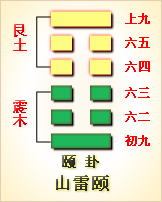

第二十七卦初九爻详解 第二十七卦六二爻详解 第二十七卦六三爻详解
第二十七卦六四爻详解 第二十七卦六五爻详解 第二十七卦上九爻详解
周易第二十七卦 颐 山雷颐 艮上震下
颐：贞吉。观颐，自求口实。
彖曰：颐贞吉，养正则吉也。观颐，观其所养也;自求口实，观其自养也。天地养万物，圣人养贤，以及万民;颐之时义大矣哉!
象曰：山下有雷，颐;君子以慎言语，节饮食。
初九：舍尔灵龟，观我朵颐，凶。象 曰：观我朵颐，亦不足贵也。
六二：颠颐，拂经，于丘颐，征凶。象曰：六二征凶，行失类也。
六三：拂颐，贞凶，十年勿用，无攸利。象曰：十年勿用，道大悖也。
六四：颠颐吉，虎视眈眈，其欲逐逐，无咎。象曰：颠颐之吉，上施光也。
六五：拂经，居贞吉，不可涉大川。象曰：居贞之吉，顺以从上也。
上九：由颐，厉吉，利涉大川。象曰：由颐厉吉，大有庆也。
颐卦卦象，山雷颐卦的象征意义
颐卦，是异卦相叠，震在下卦，艮在上卦。震为雷，艮为山。山在上而雷在下，外实内虚。
颐，是腮和下颌的合称。以嘴为一道自然分界线，线的上面是颐之腮，线之下是颐之下颌。艮为止在上，震为动在下，人们不论吃饭喝水，还是说话，主要是下颌动，颐之腮不动。这和震在下动，艮在上止的卦正好相似，所震下艮上之卦被命名为颐。
一动一止，不是说话，便是张口吃喝东西，这都是为一个目的，即为了养育自己。颐卦象征颐养，所要表达的宗旨就是：纯正以养，由口腹之养，推及养身、养德与养于人。
《象》曰：山下有雷，君子以慎言语，节饮食。这里指出，颐卦的卦象是震(雷)下艮(山)上，为雷在山下震动之表象，引申为咀嚼食物时上颚静止、下颚活动的状态，因而象征颐养;颐养必须坚守正道，所以君子应当言语谨慎以培养美好的品德，节制饮食以养育健康的身体。春暖万物养育，依时养贤育民。阳实阴虚，实者养人，虚者为人养。
颐卦启示了纯正以养的道理，属于上上卦。《象》这样来断此卦：太公独钓渭水河，手执丝杆忧愁多，时来又遇文王访，自此永不受折磨。
此卦卦名为颐。《说文》中说：“颐，颔也。”也就是说“颐”指的便是两腮的部位。这个部位也包括里面的牙齿与外面的嘴唇、下巴，所以它的引申义为饮食、颐养。人们财物有了极大的积蓄后，便开始注重饮食的养生之道了。按现在的话来说，便是人们富裕了，便会追求饮食文化。所以大畜卦之后便是颐卦，这便是《序卦传》中所说的：“物畜然后可养，故受之以颐。颐者，养也。”中间是四个阴爻。
从卦象上分析，中间的阴爻代表牙齿，上下的两个阳爻代表牙齿外围的两腮、嘴唇及下巴。颐卦上卦为艮为山，下卦为震为雷，山下有雷便是颐卦的卦象。山下怎么会有雷呢?其实指的是山中的巨响，山中由于地壳变化会发生巨大的声响，有时还会因此而发生山崩或地震等自然现象，山崩或地震会使山因倒塌而埋藏大山表面的万物，古人认为这是山在吃东西——这是最大的“吃”的形象，所以用这一形象代表所有的饮食之道。人吃东西时嘴中也会发出声响，所以与山吃东西有相通之处。
关键词：周易,颐卦,山雷颐,艮上震下
颐卦：占得吉兆。研究养生之道，要靠自己解决粮食问题。
初九：你自己放着大量财物，还来窥伺我的衣食。凶险。
六二：要解决生计问题，就得在山坡上垦荒开田。为了生计而去抢劫粮食，凶险。
六三：违背养生之道，占得凶兆。十年都很倒霉，没有什么好处。
六四：解决生计问题靠自己，吉利。像老虎一样盯住别人的衣食，想一下子扑过去抢夺。没有灾祸。
六五：垦荒开田，有利于定居的占问。不能渡大江大河。
上九：遵循养生之道，先艰难后吉利。有利于渡过大江大河。
①颐(yi)是本卦的标题。颐的意思是养育，同饮食营养有关。全卦内 容主要讲养生之道。“颐”是卦中多见词，又与内容有关，所以用它作标题。
②观：观察，研究。
③口实：口中的食物，口粮。
④舍：放置。 灵龟：用于占卜，所以十分贵重。这里代指财宝，财富。
⑤朵颐：朵，动的意思，颐动即为咀嚼之意，指饮食之事。
6颠：用作“填”，意思是塞。
(7)拂经：开垦荒地。
(8)颐征：为了生计而去抢劫粮食。
(9)拂：违 背。
(10)眈眈：盯得紧的样子。
(11)逐逐：动得快的样子。
(12)由：遵 循。